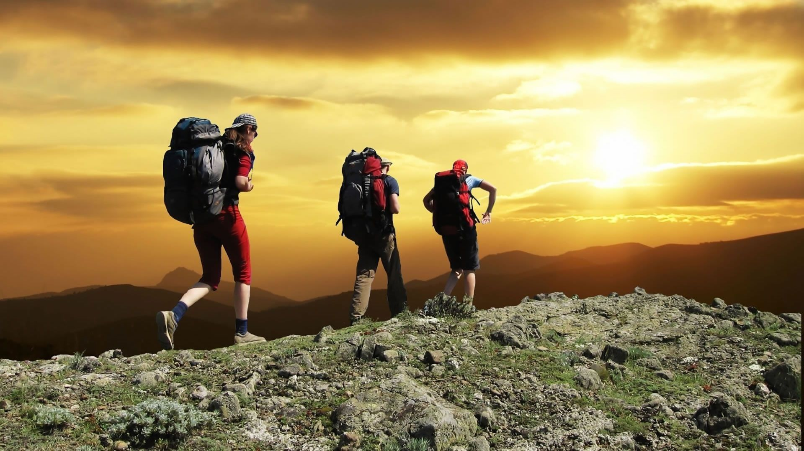

Excursionismo: historia, características y beneficios
El excursionismo es una actividad que consiste en realizar recorridos por medios naturales donde no hay caminos señalizados. Es una actividad física que se inició con fines recreativos, pero que actualmente tiene gran popularidad como una actividad deportiva. Específicamente entra en el área de deporte extremo o de aventura.
La palabra excursionismo nace del latín y surge de la unión del prefijo ex (que significa hacia el exterior), de currere (que quiere decir correr) y del sufijo sión (que significa acción). Popularmente se conoce también por trekking, palabra procedente del inglés.
Es necesario cumplir o tomar en cuenta ciertas normas elementales que tienen que ver con la seguridad, el cuidado al medio ambiente o la ausencia de medios de transporte motorizados.
Hay muchas formas de hacer excursionismo. Todo depende de las condiciones en donde se realiza la caminata, la longitud de la misma y el terreno en el que se realiza la actividad, aunque la forma más habitual de excursionismo es el montañismo.
Básicamente todas las variantes se resumen en el acto de caminar. En niveles más avanzados es importante poseer otros conocimientos sobre supervivencia, tener una buena condición física y trabajar el estado mental para afrontar cualquier obstáculo.
Historia
Se puede decir que el excursionismo, por ser una actividad que se practica al aire libre, se remonta a la época de la Edad de Piedra. Fue en ese entonces que los humanos aprendieron a ponerse en pie y dar sus primeros pasos.
El excursionismo entonces sirvió para explorar nuevos sitios para la supervivencia de la especie y para cazar. Actualmente la función mutó hacia la recreación, pero es muy complicado presenciar cuándo o cómo ocurrió la evolución.
Hay algunos hitos históricos, como el ascenso a algunas montañas, que ayudaron a establecer momentos importantes en la historia de la actividad.
Una de las primeras caminatas que se reseñó en la historia a nivel mundial tiene que ver con el trayecto que recorrió el emperador romano Adriano hacia el volcán Etna en 125 d C. También hay evidencias arqueológicas que muestran como durante el Imperio inca, muchas comunidades se trasladaron hasta los Andes debido a motivos religiosos.
Muchos estudiosos afirman que la actividad de caminar al aire libre se popularizó en el siglo XVIII. El movimiento romántico durante la época hizo que las personas tuvieran una nueva visión hacia la naturaleza y todo lo que les rodeaba.
Excursiones importantes
Desde el siglo XIX comenzaron a ser más populares los ascensos a imponente montañas alrededor del mundo, aunque una de las primeras excursiones de gran importancia ocurrió en 1744 con el ascenso a la montaña Titlis, localizada en Suiza.
En 1874 un grupo de excursionistas alcanzó la cima del monte Elbrus, la montaña más alta de Europa. En 1882 ocurrió lo mismo en la zona sur de los Alpes del Sur en Nueva Zelanda. Para 1897 se llegó a la punta más alta de los Andes. El Monte Everest, la montaña más alta del mundo, tuvo que esperar hasta 1953 para poder ser escalada.
Técnicas
Los excursionistas más experimentados y cuyos senderos requieren mayor preparación planifican con cuidado la actividad que van a realizar.
Muchas veces se planifica el tiempo de la excursión y para esto se toma en cuenta la elevación, la cantidad de kilómetros que se van a recorrer y el nivel del excursionista. Es importante tener en cuenta que las excursiones en montañas, colinas o por caminos con grandes inclinaciones son más complicados de caminar.
El ritmo de caminata es distinto al de escalada (o ascenso de montaña). También se deben tomar en cuenta los descansos en la planificación, así como los estiramientos, los cuales son importantes antes, durante y después de las excursiones. Puede ayudar a prevenir lesiones y dolores musculares.
El terreno de las excursiones se escoge en base al nivel de experiencia y de la condición física. Normalmente, a mayor altitud el ritmo varía ya que los pasos son más cortos, la velocidad es menor y el ritmo debe ser más estable.
Características
El equipo necesario para hacer excursionismo depende de muchos factores. Está específicamente determinado por la duración de la actividad, los ecosistemas existentes, el terreno y el nivel de dificultad.
Los excursionistas, por lo general, llevan consigo al menos agua (u otro tipo de hidratantes líquidos), comida, un mapa y equipo o ropa a prueba de lluvia. El calzado debe ser el adecuado para el tipo de terreno que se va a recorrer. Otros instrumentos importantes son brújula, lentes de sol, protectores solares, linternas, cuchillo y productos de primeros auxilios.
Hay que tener en cuenta que, mientras más dure la excursión, mayor es la cantidad de artículos necesarios y la preparación. Esto puede incrementar los niveles de fatiga y de dificultad por el peso.
Los excursionistas normalmente transitan por caminos que presentan cierta dificultad, los cuales muchas veces pueden carecer de señales o indicaciones para completar la ruta. Para realizar excursionismo no hay una duración determinada. La actividad puede durar uno o varios días.
El excursionismo puede ser de diferentes tipos. Aunque actualmente es muy popular el excursionismo con fines deportivos, es posibles llevarlos a cabo como una actividad cultural, religiosa o como turismo ecológico.
Posibles beneficios para la salud
Toda actividad física y deportiva trae consigo algunos beneficios. Pueden ocurrir a nivel psicológico, espiritual o físico.
En el área específica de la salud, el excursionismo representa un ejercicio con un gran impacto en el cuerpo humano a nivel cardiovascular, ya que ayuda a una disminución en los problemas cardíacos y a un mejor funcionamiento de la presión arterial.
Es una actividad que desarrolla en gran medida la parte inferior del cuerpo. Los glúteos y piernas se fortalecen y la densidad ósea mejora.
Algunos estudios también han demostrado que la actividad al aire libre sirve para mejorar el estado anímico de las personas. Se han demostrado efectos positivos en aquellas personas con problemas de ansiedad o estrés.
Riesgos para la salud
Toda actividad deportiva puede representar algún tipo de peligro para quien la practica. El excursionismo puede representar una amenaza para la integridad física, ya que el terreno puede ser peligroso, puede hacer mal tiempo y ocurrir cualquier problema inesperado.
Una enfermedad muy habitual entre los excursionistas (incluso entre corredores de largas distancias como maratones) es la diarrea. Otros riesgos pueden incluir sufrir de deshidratación, hipotermia, insolación o esguinces.
Por ser una actividad al aire libre, los ataques de animales pueden ocurrir de forma inesperada. Mamíferos, insectos o reptiles pueden ser una amenaza para los excursionistas en su trayecto.
Diferencias con el senderismo
No hay que confundir el excursionismo con el senderismo, aunque son actividades físicas con muchas similitudes y que al final se relacionan entre sí.
El senderismo se realiza por caminos con señales o indicaciones previamente establecidas. El hecho que el excursionismo no respete siempre los senderos existentes le otorga un mayor nivel de dificultad.